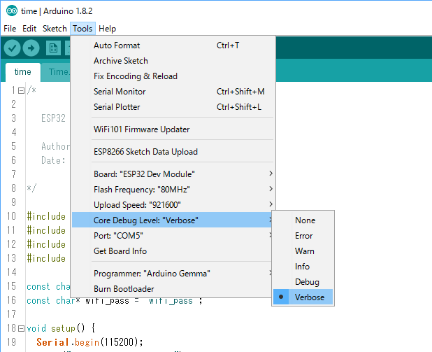

ESP32で時間取得
Tweet
概要
今回はESP32で現在時刻を取得するサンプルコードの紹介です．
今回のコードではC++標準の時刻を合わせるので，std::time()関数で時刻を取得することができるようになります．
具体的には，
time_t t = time(NULL);
struct tm *t_st;
t_st = localtime(&t);
printf("月: %d\n",t_st->tm_mon+1);
printf("日: %d\n",t_st->tm_mday);
printf("時: %d\n",t_st->tm_hour);
printf("分: %d\n",t_st->tm_min);
printf("秒: %d\n",t_st->tm_sec);
printf("Time: %s", ctime(&t));
のように時刻を扱えます．
ソースコード
Arduino IDE上で動作します．ここからダウンロードできます．
time.ino
/*
ESP32 Time Example
Author: kerikun11 (Github: kerikun11)
Date: 2017.02.24
*/
#include <WiFi.h>
#include "esp32-hal-log.h"
#include "config.h"
#include "Time.h"
const char* wifi_ssid = "wifi_ssid";
const char* wifi_pass = "wifi_pass";
void setup() {
Serial.begin(115200);
log_i("Hello, this is ESP32.");
log_i("Connecting to %s", wifi_ssid);
WiFi.begin(wifi_ssid, wifi_pass);
while (WiFi.status() != WL_CONNECTED) {
log_i("wait...");
delay(1000);
}
log_i("WiFi connected");
Time.set_time();
}
void loop() {
time_t t = time(NULL);
log_d("Time: %s", ctime(&t));
delay(1000);
}
Time.h
/**
The MIT License (MIT)
Copyright (c) 2017 kerikun11
Permission is hereby granted, free of charge, to any person obtaining a copy of this software and associated documentation files (the "Software"), to deal in the Software without restriction, including without limitation the rights to use, copy, modify, merge, publish, distribute, sublicense, and/or sell copies of the Software, and to permit persons to whom the Software is furnished to do so, subject to the following conditions:
The above copyright notice and this permission notice shall be included in all copies or substantial portions of the Software.
THE SOFTWARE IS PROVIDED "AS IS", WITHOUT WARRANTY OF ANY KIND, EXPRESS OR IMPLIED, INCLUDING BUT NOT LIMITED TO THE WARRANTIES OF MERCHANTABILITY, FITNESS FOR A PARTICULAR PURPOSE AND NONINFRINGEMENT. IN NO EVENT SHALL THE AUTHORS OR COPYRIGHT HOLDERS BE LIABLE FOR ANY CLAIM, DAMAGES OR OTHER LIABILITY, WHETHER IN AN ACTION OF CONTRACT, TORT OR OTHERWISE, ARISING FROM, OUT OF OR IN CONNECTION WITH THE SOFTWARE OR THE USE OR OTHER DEALINGS IN THE SOFTWARE.
*/
#pragma once
#include <Arduino.h>
#include <WiFi.h>
#include <WiFiUdp.h>
#include <ctime>
#include "esp32-hal-log.h"
class Time;
extern Time Time;
class Time {
public:
Time(char *time_zone = "JST-9"): time_zone(time_zone) {}
bool set_time();
private:
WiFiUDP udp;
const char* time_zone;
bool getNtpTime(struct timeval* tvp);
};
Time.cpp
/**
The MIT License (MIT)
Copyright (c) 2017 kerikun11
Permission is hereby granted, free of charge, to any person obtaining a copy of this software and associated documentation files (the "Software"), to deal in the Software without restriction, including without limitation the rights to use, copy, modify, merge, publish, distribute, sublicense, and/or sell copies of the Software, and to permit persons to whom the Software is furnished to do so, subject to the following conditions:
The above copyright notice and this permission notice shall be included in all copies or substantial portions of the Software.
THE SOFTWARE IS PROVIDED "AS IS", WITHOUT WARRANTY OF ANY KIND, EXPRESS OR IMPLIED, INCLUDING BUT NOT LIMITED TO THE WARRANTIES OF MERCHANTABILITY, FITNESS FOR A PARTICULAR PURPOSE AND NONINFRINGEMENT. IN NO EVENT SHALL THE AUTHORS OR COPYRIGHT HOLDERS BE LIABLE FOR ANY CLAIM, DAMAGES OR OTHER LIABILITY, WHETHER IN AN ACTION OF CONTRACT, TORT OR OTHERWISE, ARISING FROM, OUT OF OR IN CONNECTION WITH THE SOFTWARE OR THE USE OR OTHER DEALINGS IN THE SOFTWARE.
*/
#include "Time.h"
#define NTP_SERVER_IPADDRESS IPAddress(133, 243, 238, 164)
#define NTP_LOCAL_PORT 2390
#define NTP_PACKET_SIZE 48
class Time Time;
bool Time::set_time() {
udp.begin(NTP_LOCAL_PORT);
struct timeval tv;
if (!getNtpTime(&tv)) {
return false;
}
struct timezone tz;
setenv("TZ", time_zone, 1);
tzset();
tz.tz_minuteswest = 0;
tz.tz_dsttime = 0;
settimeofday(&tv, &tz);
time_t t = time(NULL);
log_d("Time: %s", ctime(&t));
return true;
}
bool Time::getNtpTime(struct timeval* tvp) {
while (udp.parsePacket() > 0) {
delay(1);
}
log_i("Transmiting NTP Request...");
byte packetBuffer[NTP_PACKET_SIZE];
memset(packetBuffer, 0, NTP_PACKET_SIZE);
packetBuffer[0] = 0b11100011; // LI, Version, Mode
packetBuffer[1] = 0; // Stratum, or type of clock
packetBuffer[2] = 6; // Polling Interval
packetBuffer[3] = 0xEC; // Peer Clock Precision
// 8 bytes of zero for Root Delay & Root Dispersion
packetBuffer[12] = 49;
packetBuffer[13] = 0x4E;
packetBuffer[14] = 49;
packetBuffer[15] = 52;
udp.beginPacket(NTP_SERVER_IPADDRESS, 123); //NTP requests are to port 123
udp.write(packetBuffer, NTP_PACKET_SIZE);
udp.endPacket();
uint32_t time_stamp = millis();
while (millis() - time_stamp < 1500) {
int size = udp.parsePacket();
if (size >= NTP_PACKET_SIZE) {
log_i("Received NTP Response");
udp.read(packetBuffer, NTP_PACKET_SIZE);
unsigned long secsSince1900, afterTheDecimalPoint;
secsSince1900 = (unsigned long)packetBuffer[40] << 24;
secsSince1900 |= (unsigned long)packetBuffer[41] << 16;
secsSince1900 |= (unsigned long)packetBuffer[42] << 8;
secsSince1900 |= (unsigned long)packetBuffer[43] << 0;
afterTheDecimalPoint = (unsigned long)packetBuffer[44] << 24;
afterTheDecimalPoint |= (unsigned long)packetBuffer[45] << 16;
afterTheDecimalPoint |= (unsigned long)packetBuffer[46] << 8;
afterTheDecimalPoint |= (unsigned long)packetBuffer[47] << 0;
tvp->tv_sec = secsSince1900 - 2208988800UL;
tvp->tv_usec = (float)afterTheDecimalPoint * 1000000 / (uint64_t)0x100000000;
log_d("%d,%d", tvp->tv_sec, tvp->tv_usec);
return true;
}
}
log_e("No NTP Response :-(");
return false;
}
シリアル出力の設定
ESP32にはログ出力用のライブラリが用意してあります．今回のログ出力にはそれを使いました．
printfの代わりに以下を使います．
#include "esp32-hal-log.h"
void log_v(format, ...); // verbose
void log_d(format, ...); // debug
void log_i(format, ...); // info
void log_w(format, ...); // warning
void log_e(format, ...); // error
そのログを出力するにはArduino IDEのボード設定から出力を有効にしてください．

前の記事